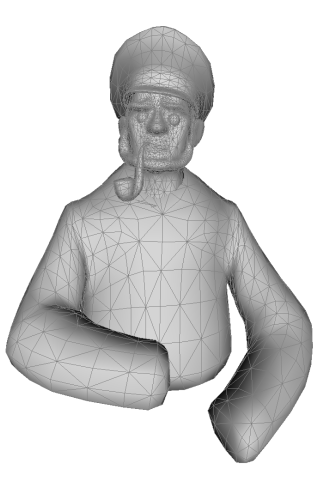

La stylisation procedurale
Maxime Isnel
supervisé par Joëlle Thollot et Romain Vergne
Sommaire
- Introduction
- État de l'art
- Stylisation procedurale
- Résultats
- Conclusion
La stylisation
01. Introduction
Définition: Action de styliser, de représenter un objet de manière simplifiée en vue d'un effet décoratif.
La stylisation


La stylisation
Insérer exemples de stylisation: peinture, dessin aux crayons, aquarelles, dessin réaliste de cheveux, etc.
La continuité temporelle
La cohérence de mouvement
L'aspect 2D
Sommaire
- Introduction
- État de l'art
- Stylisation procedurale
- Résultats
- Conclusion
Espaces de travail
Espace objet
insérer image maillage
Espace image
insérer image d'object projeté
Rendu à base de textures
Principe: mapper une texture sur un objet.
image montrant le principe
Rendu à base de textures
Espace objet
texture en 3D (papier Pierre)
Espace image
image texture papier (MNPR: framework)
Rendu à base de textures
avantages et inconvénients
Rendu à base de marques
Principe: faire un rendu graphique à partir de dessin d'images 2D

Rendu à base de marques
Besoins
- marques 2D
- points d'ancrage
Espace objet
image point d'ancrage sur object
Espace image
image distribution de point
Rendu à base de marques
Examples
Espace objet
image Overcoat
OverCoat: an implicit canvas for 3D paintingEspace image
image en espace image avec marques
RefRendu à base de marques
avantages et inconvénients
Conclusion état de l'art
insérer tableau comparatif (le même que sur le rapport)
Sommaire
- Introduction
- État de l'art
- Stylisation procedurale
- Résultats
- Conclusion
Vue d'ensemble
inserer schéma de l'overview
Moment de la composition
- Travail qu'avec des images
- G-buffer déjà rendu
insérer image G-Buffer rendus
Bruits procéduraux
pourquoi on l'utilise
- bruit pseudo aléatoire
- utilisé en tant que texture en informatique graphique
- calculés à partir de coordonées
Bruits procéduraux
Examples de bruits procéduraux
Bruits procéduraux
Examples d'usage de bruits procéduraux
marble
feu
vague avec worley
Bruit de Worley
Explication de son principe
Bruit de Worley
explication de notre contribution avec les formules
Fractalisation
Pourquoi ?
Exemples avec et sans
Fractalisation
comment ça marche
Conclusion
- modification bruit de Worley
- utilisation de ce bruit pour les points d'ancrage des marques